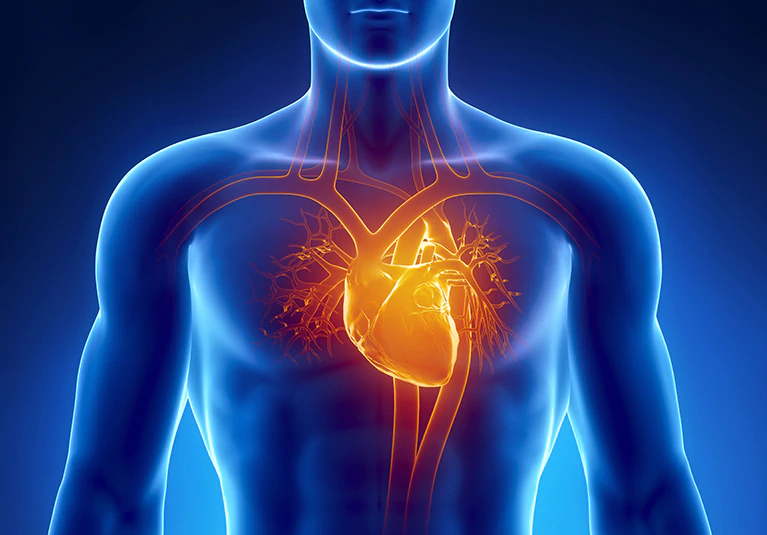

Running - A Healthy Lifestyle
By - Saikiran (10/02/2020)
Health Benefits
Cardiovascular Benefits
While there exists the potential for injury while running (just as there is in any sport), there are many benefits. Some of these benefits include potential weight loss, improved cardiovascular and respiratory health (reducing the risk of cardiovascular and respiratory diseases), improved cardiovascular fitness, reduced total blood cholesterol, strengthening of bones (and potentially increased bone density), possible strengthening of the immune system and an improved self-esteem and emotional state.
Running, like all forms of regular exercise, can effectively slow or reverse the effects of aging. Even people who have already experienced a heart attack are 20% less likely to develop serious heart problems if more engaged in running or any type of aerobic activity. Although an optimal amount of vigorous aerobic exercise such as running might bring benefits related to lower cardiovascular disease and life extension, an excessive dose (e.g., marathons) might have an opposite effect associated with cardiotoxicity.
Weight Loss
Running can assist people in losing weight, staying in shape and improving body composition. Research suggests that the person of average weight will burn approximately 100 calories per mile run. Running increases one's metabolism, even after running; one will continue to burn an increased level of calories for a short time after the run. Different speeds and distances are appropriate for different individual health and fitness levels. For new runners, it takes time to get into shape. The key is consistency and a slow increase in speed and distance. While running, it is best to pay attention to how one's body feels. If a runner is gasping for breath or feels exhausted while running, it may be beneficial to slow down or try a shorter distance for a few weeks. If a runner feels that the pace or distance is no longer challenging, then the runner may want to speed up or run farther.
Mental Health
Running can also have psychological benefits, as many participants in the sport report feeling an elated, euphoric state, often referred to as a "runner's high". Running is frequently recommended as therapy for people with clinical depression and people coping with addiction. A possible benefit may be the enjoyment of nature and scenery, which also improves psychological well-being.
Running is an effective way to reduce stress, anxiety, depression, and tension. It helps people who struggle with seasonal affective disorder by running outside when it's sunny and warm. Running can improve mental alertness and also improves sleep, which is needed for good mental health. Both research and clinical experience have shown that exercise can be a treatment for serious depression and anxiety even some physicians prescribe exercise to most of their patients. Running can have a longer lasting effect than anti-depressants.
